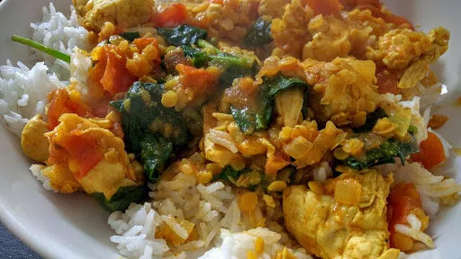

Quick chicken & red lentil curry
25 mins
Serves 1
Indian

Ingredients
-
1
tbsp olive oil
-
1
onion, sliced
-
3
chicken breasts, cut into small pieces
-
2
tbsp Korma curry paste
-
6
large tomatoes, chopped
-
1
mug water
-
½
mug red lentils
-
100
g fresh spinach, roughly chopped
- rice and yoghurt to serve
Instructions
- Heat the oil in a wok. Add the onions and fry until they begin to soften.
- Add the chicken and fry until it is no longer pink.
- Add the curry paste and cook for 1 minute.
- Add the tomatoes, water and lentils. Bring the the boil, then turn down and simmer for 15 minutes.
- Put the rice on to cook. Set to one side until needed.
- Stir the spinach into the curry and cook for 30 seconds.
- Serve with the rice and yoghurt.
Nosh: Quick & Easy
Short Link
Long Link